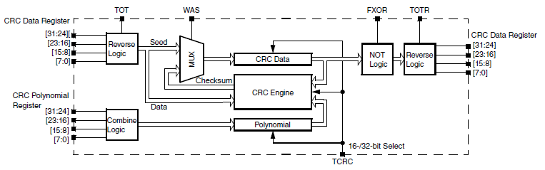

Description
The cyclic redundancy check (CRC) module generates 16/32-bit CRC code for error detection.
This is a program to show a basic configuration of CRC module following RM steps.

Design
- Disable Watchdog.
- System clocks: Initialize SOSC for 8 MHz, sysclk for 80 MHz, RUN mode for 80 MHz
- Enable Clock for CRC module.
- Calculate 32-bit CRC.
Driver Functions:
main.c
#include "device_registers.h"
{
WDOG->CNT=0xD928C520;
WDOG->TOVAL=0x0000FFFF;
WDOG->CS = 0x00002100;
}
{
uint8_t test = 0x41;
uint32_t crc = 0x00000000;
for(;;)
{
}
}
 1.8.15
1.8.15